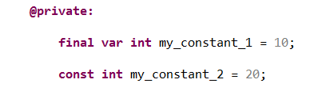
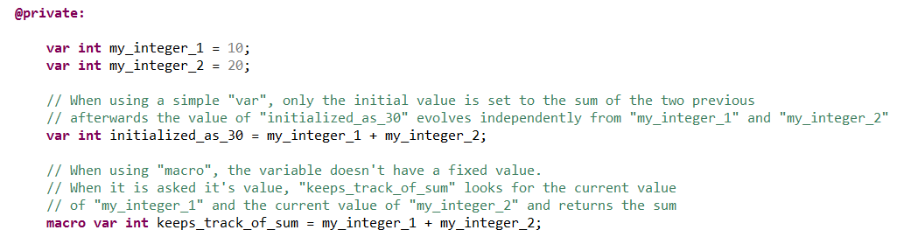

Variable modifiers can add some variants to the definition of a variable. Those variations are mainly about how the execution engine deals with the variable.
Please refer to the "@property" section.
The "final" modifier turns the variable into a constant which is a sub-type of variable.
A constant is a variable which can be initialized but never modified. It can never be the left member of an assignment nor be used for data reception.
We can also replace "final var" by the syntactic shortcut "const" :
A macro is a typed "variable-function" that can be used as any variable of the same type. When it is used, it must always have a value, which is a function of other variables, so that it can be evaluated as a function. For example:
We can also replace "macro var" by the syntactic shortcut "macro" :
See also "@macro" section to avoid confusion between those two different things.
This attribute indicates that the value of a public variable can be modified outside its normal visibility scope, for example by a parallel machine.
This information is used by the XLIA compiler: if the variable is of a ranged type, the compiler will check all its uses and possibly generate a monitor to put constraints on expressions which are assigned to it.
This attribute indicates that a variable can only be used in computations, and never as a state variable of the machine. This information is used by heuristics such as those which try to anticipate redundant symbolic evaluations.